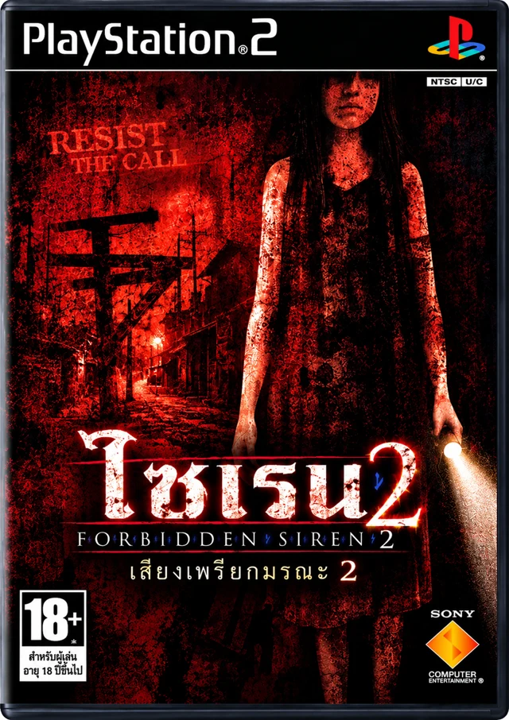

ภาพปกประกอบ · ไฟล์ที่รองรับคือ Europe/PAL
Forbidden Siren 2
เสียงไซเรนดังขึ้นบนเกาะยามิจิมะ ดึงผู้คนหลายชีวิตเข้าสู่คืนที่เต็มไปด้วยความลับและสิ่งมีชีวิตในความมืด คุณต้องสลับเล่นตัวละครหลายคน ประกอบเรื่องราวจากต่างช่วงเวลา และหาทางเอาชีวิตรอดจากเกาะแห่งนี้
เกมสยองขวัญเอาชีวิตรอดที่เน้นการหลบซ่อน สำรวจ และไขปริศนา จุดเด่นคือ Sightjack — การยืมสายตาของผู้อื่นเพื่อดูตำแหน่งและเส้นทางศัตรู แล้ววางแผนผ่านสถานการณ์อันตราย
- รหัสเกม
- SCES-53851 (SCES_538.51)
- โซน / รุ่น
- Europe · PAL · VER 1.00
- ต้นฉบับ
- Europe (En,Fr,De,Es,It) ที่ยังไม่ลงแพตช์
- ขนาด ISO
- 5,844,074,496 ไบต์ · ประมาณ 5.44 GiB
- ภาษาที่เลือก
- English ในเกม
ลงแพตช์ภาษาไทยบนเว็บ
ใช้ Chrome หรือ Edge บนคอมพิวเตอร์ ไฟล์เกมจะประมวลผลในเครื่องคุณเอง เว็บดาวน์โหลดเฉพาะข้อมูลแพตช์และไม่อัปโหลด ISO
- เลือก ISO ต้นฉบับโซน Europe/PAL รหัส SCES-53851
- กดสร้าง ISO ภาษาไทย แล้วเลือกตำแหน่งบันทึกเป็นไฟล์ใหม่ ควรมีพื้นที่ว่างอย่างน้อย 6 GB
- รอระบบตรวจต้นฉบับ สร้างไฟล์ และตรวจผลลัพธ์จนขึ้นว่าสำเร็จ อย่าปิดแท็บระหว่างทำงาน
ยังไม่ได้เลือกไฟล์
ตรวจขนาดและ SHA-256 ก่อนลงแพตช์ รองรับเฉพาะไฟล์ต้นฉบับที่ตรงกัน
หลังแปะแพตช์บนเว็บ
เปิด ISO ภาษาไทยใน PCSX2 หรืออุปกรณ์ที่รองรับ แล้วเลือก English ภายในเกม เริ่มบูตเกมใหม่ และใช้เซฟในเกมแทน save state ที่สร้างไว้ก่อนลงแพตช์
SHA-256 สำหรับตรวจไฟล์
ต้นฉบับ019d6cea66328a9d9c99205141223f442fd8597f84ba021c01120824464cbfe7
ภาษาไทย v1.0479a8d73b990cc4f20213b11672bdd43ba492e247e1cd89561e6d99a2f3f92c4